Accueil › Sécurité Cloud › IAM & Principe du Moindre Privilège
☁️ AWS Sécurité Cloud & IAM
Contexte – Le projet PaySen
Ce lab applique les concepts IAM sur un cas concret : la startup fictive PaySen, une application de paiement mobile en cours de développement. L'objectif est de construire une structure IAM réaliste qui reflète une organisation d'équipe réelle, en appliquant rigoureusement le Principe du Moindre Privilège.
🔑 Le Principe du Moindre Privilège (PoLP)
Chaque utilisateur, service ou application doit disposer uniquement des permissions strictement nécessaires à l'accomplissement de ses tâches — ni plus, ni moins.
- Un développeur n'a pas besoin d'accéder à IAM pour écrire du code
- Une fonction Lambda qui lit dans S3 n'a pas besoin de créer des utilisateurs
- Un analyste qui produit des rapports n'a pas besoin de supprimer des bases de données
Si un compte développeur est compromis, l'attaquant se retrouve limité aux ressources de développement — sans pouvoir toucher la production ni escalader ses privilèges.
Structure IAM mise en place
| Groupe | Utilisateurs | Policy | Accès |
|---|---|---|---|
| Admins | admin-Fatou | AdministratorAccess | Accès total AWS |
| Developers | dev-Moussa, dev-Ibou, dev-Aissatou | Custom-Dev-Policy | S3 dev, Lambda dev, CloudWatch read, EC2 describe |
| Auditors | analyst-Awa | ReadOnlyAccess | Lecture seule sur tous les services |
Connexion en région eu-west-1 et tableau de bord IAM
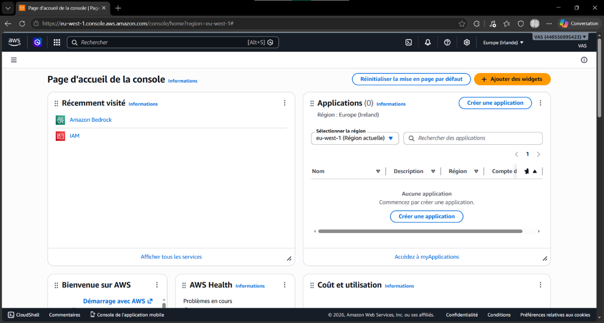
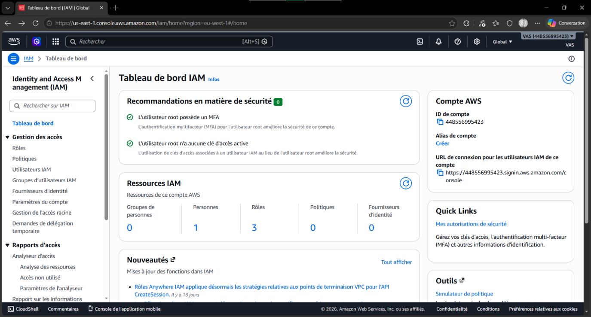
Création des 3 groupes : Admins, Auditors, Developers
Les groupes permettent d'attribuer des policies à plusieurs utilisateurs en une seule opération. Chaque utilisateur hérite automatiquement des permissions de son groupe.
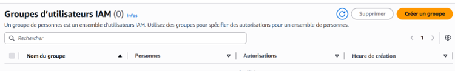
Groupe Admins – AdministratorAccess
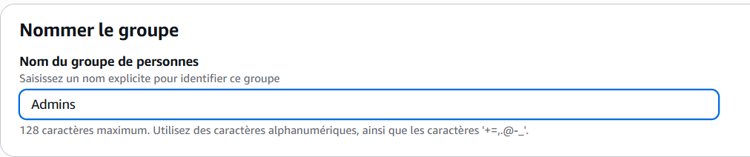
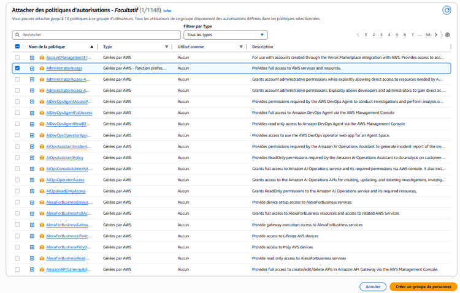
Groupe Auditors – ReadOnlyAccess
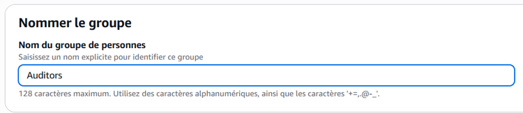
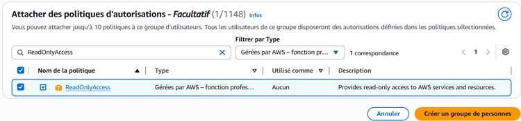
Groupe Developers – Sans policy (custom à venir)
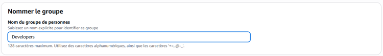
Bilan : les 3 groupes créés
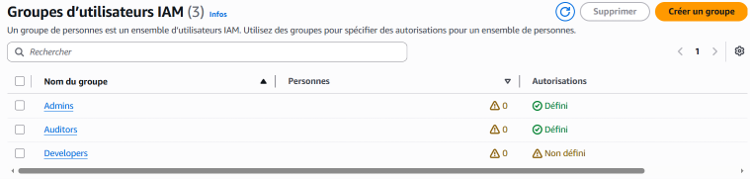
Policy JSON sur mesure pour les développeurs PaySen
C'est l'application concrète du PoLP : les développeurs ont exactement ce dont ils ont besoin — ni plus, ni moins.
"Version": "2012-10-17",
"Statement": [
{ // S3 dev uniquement
"Sid": "S3DevBucketsAccess",
"Effect": "Allow",
"Action": ["s3:GetObject", "s3:PutObject", "s3:CreateBucket", "s3:ListBucket", "s3:DeleteObject"],
"Resource": ["arn:aws:s3:::paysenv-dev-*"]
},
{ // Lambda dev uniquement
"Sid": "LambdaDevFunctions",
"Effect": "Allow",
"Action": ["lambda:UpdateFunctionCode", "lambda:GetFunction", "lambda:ListFunctions", "lambda:InvokeFunction"],
"Resource": "arn:aws:lambda:*:*:function:paysenv-dev-*"
},
{ // Logs CloudWatch en lecture
"Sid": "CloudWatchLogsRead",
"Effect": "Allow",
"Action": ["logs:GetLogEvents", "logs:DescribeLogGroups", "logs:DescribeLogStreams"],
"Resource": "*"
},
{ // EC2 describe seulement (lecture)
"Sid": "EC2DescribeOnly",
"Effect": "Allow",
"Action": ["ec2:Describe*"],
"Resource": "*"
}
]
}
Action: "*", les développeurs auraient un accès total équivalent à AdministratorAccess — une faille de sécurité majeure. La granularité des actions est essentielle.
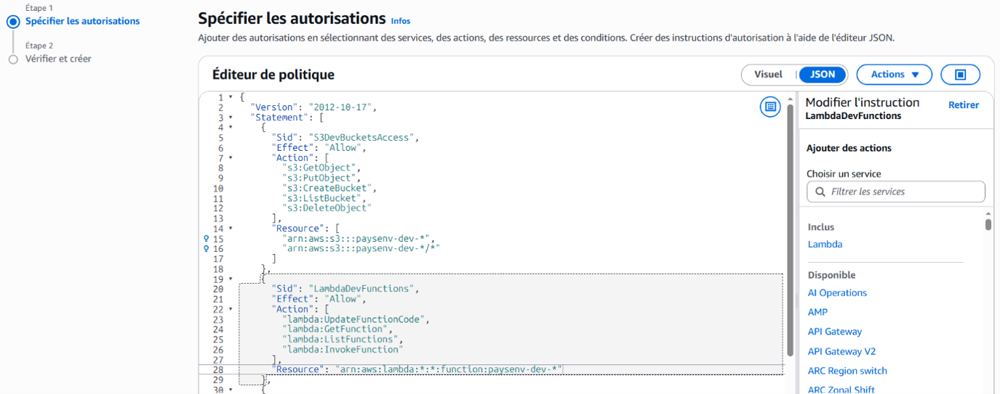
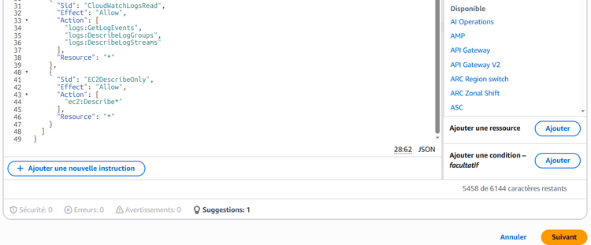
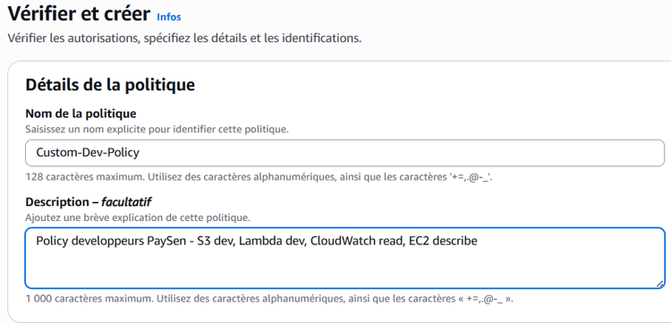
Attachement au groupe Developers
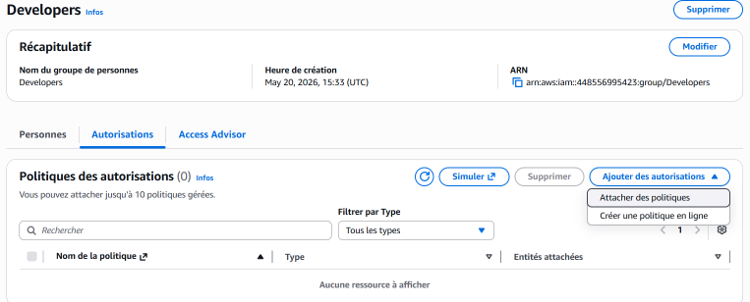
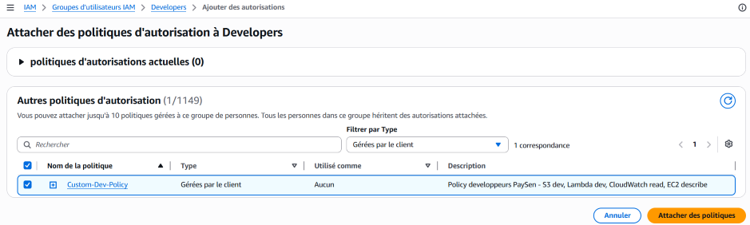
5 utilisateurs créés et affectés à leurs groupes
admin-Fatou (groupe Admins)
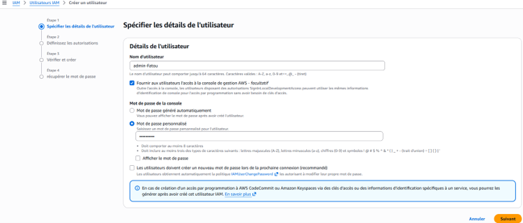
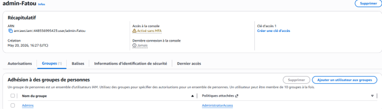
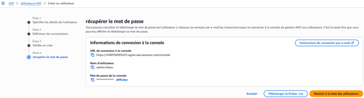
Développeurs (groupe Developers)
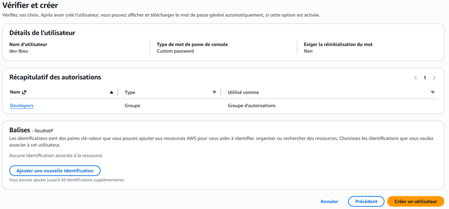
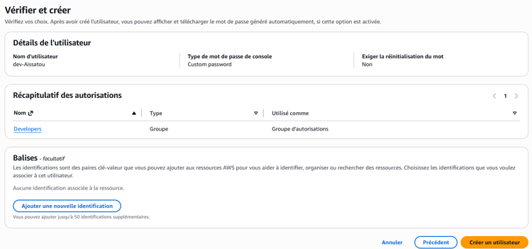
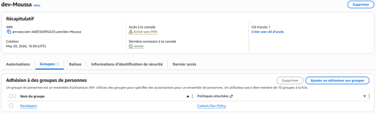
Analyste (groupe Auditors)
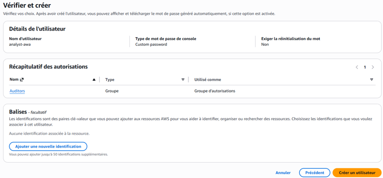
Vérification finale
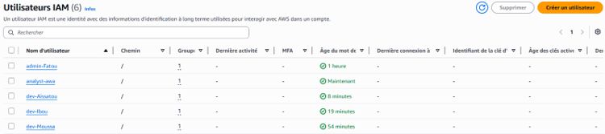
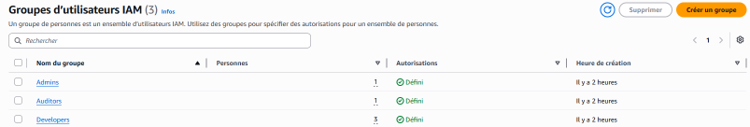
Validation concrète du Principe du Moindre Privilège
On se connecte en tant que dev-Moussa en navigation privée pour tester 3 services : S3 (autorisé), IAM (refusé), EC2 (lecture seule).
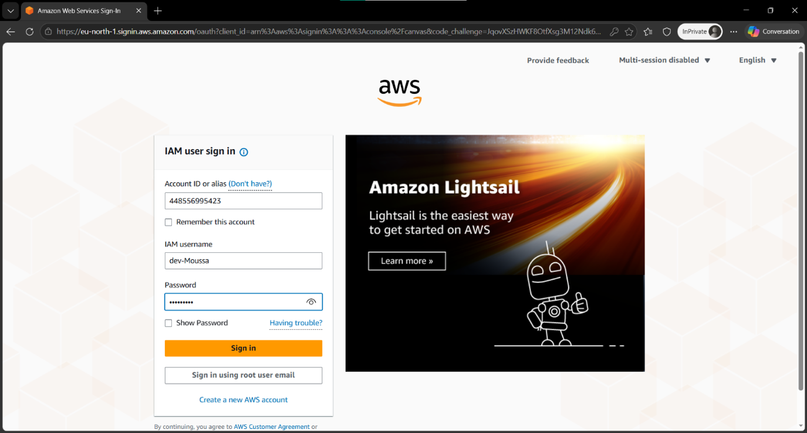
Test 1 – S3 : création d'un bucket autorisé ✅
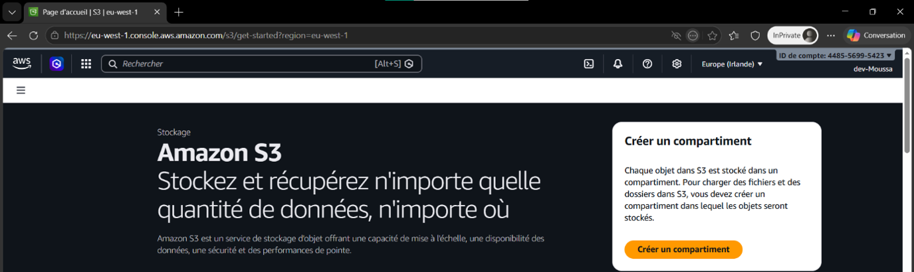

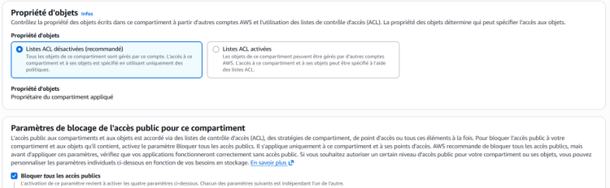
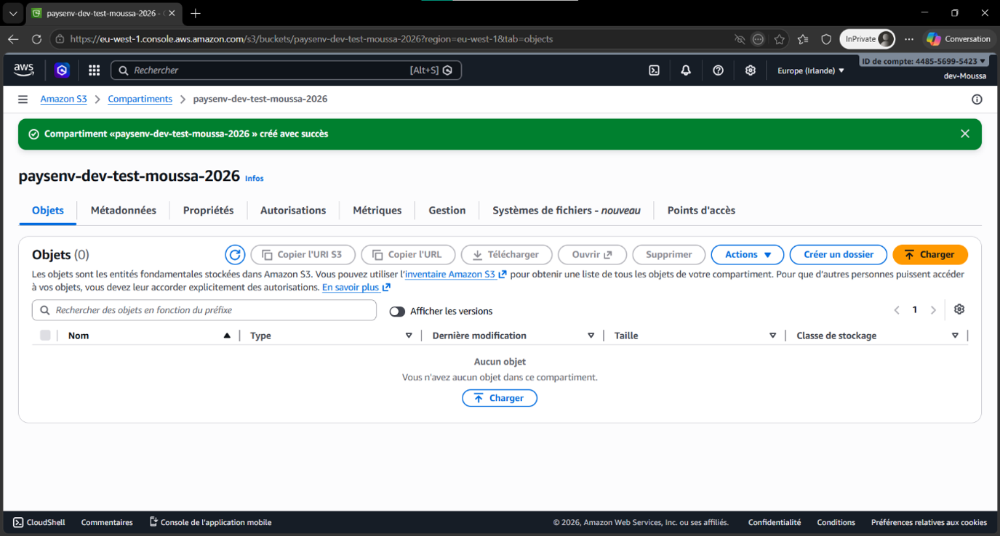
Test 2 – IAM : accès refusé ✅
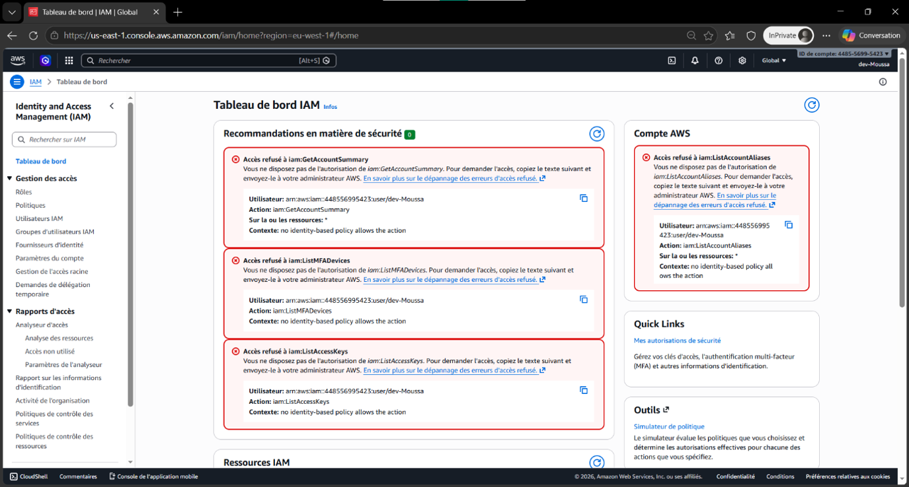
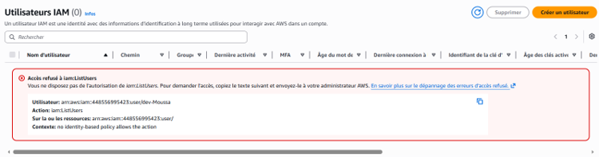
Test 3 – EC2 : lecture seule ✅
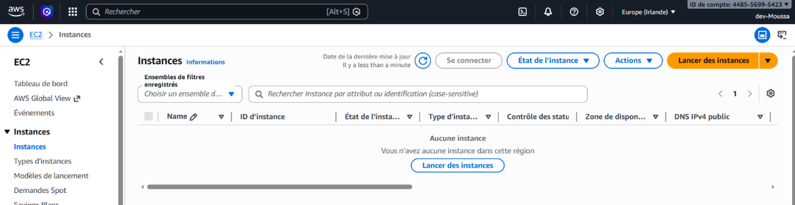
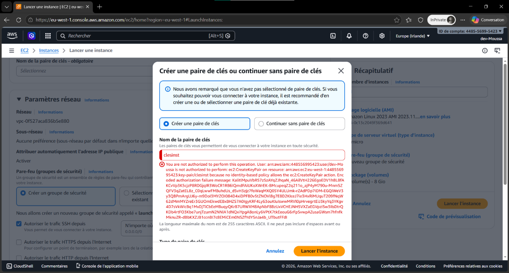
Suppression du bucket de test – bonne pratique cloud
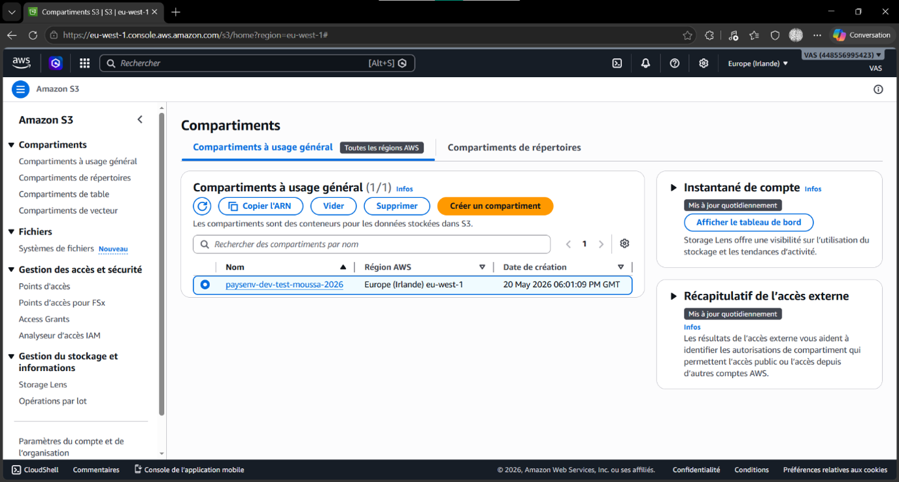
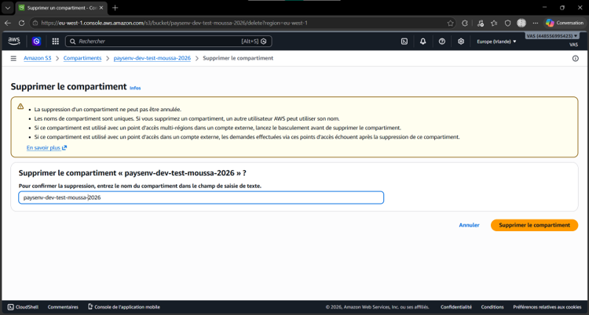
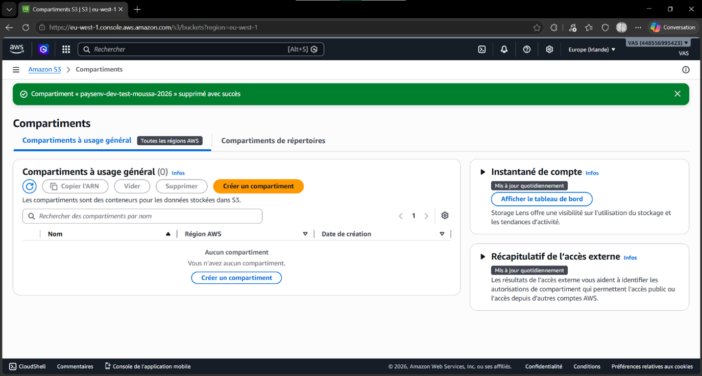
✅ Bilan du Lab – Ce que j'ai appris
- Groupes IAM : organiser les permissions par rôle (Admins, Auditors, Developers) plutôt que par utilisateur individuel — plus scalable et maintenable
- Policies managées AWS : AdministratorAccess (accès total) et ReadOnlyAccess (lecture seule) pour les rôles standards
- Policy JSON custom : écrire une policy sur mesure qui limite précisément les services et les ressources (paysenv-dev-*)
- Granularité des actions :
ec2:Describe*≠ec2:*— la différence est critique en sécurité - Tests de permissions : valider le PoLP en se connectant avec un user limité et en testant les accès autorisés ET refusés
- Nettoyage AWS : toujours supprimer les ressources de test pour éviter des coûts inutiles et maintenir un compte propre
- Bonne pratique MFA : en production, activer le MFA sur tous les comptes admin — le statut "Activé sans MFA" est à corriger